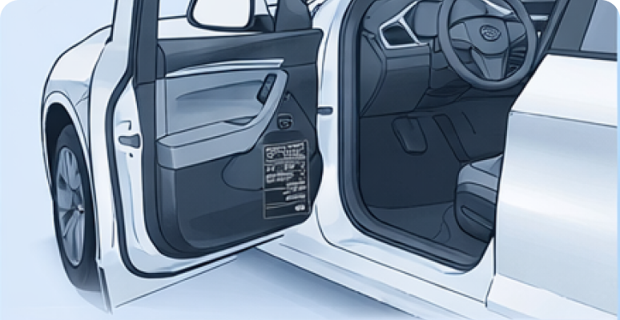

Windshield (lower corner)
The quickest way to find the VIN is by looking through the windshield from outside the vehicle. It is typically located on the driver’s side.
The 17-character Vehicle Identification Number (VIN) can be found in several standard locations on most vehicles, as well as in official documents. It is recommended to check the VIN in multiple places to ensure its authenticity.
The quickest way to find the VIN is by looking through the windshield from outside the vehicle. It is typically located on the driver’s side.

Open the driver’s door and inspect the door pillar. You will usually find a sticker or metal plate displaying the VIN, along with production and technical details.

The VIN may be stamped directly onto the body: on the right strut tower.

The VIN may be stamped directly onto the body: on the firewall between the engine and the cabin.

In some vehicles, the VIN may be located under the rear seat or beneath the trunk floor near the spare wheel compartment.

In modern vehicles, the VIN can often be accessed through the infotainment system under “Vehicle Information”.
If you don’t have access to the vehicle, check the following documents: